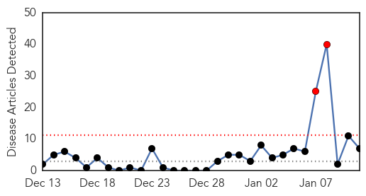
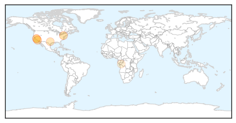
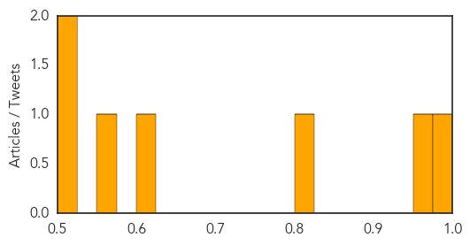
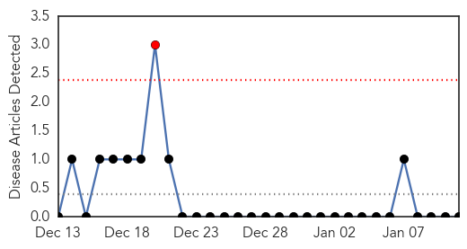
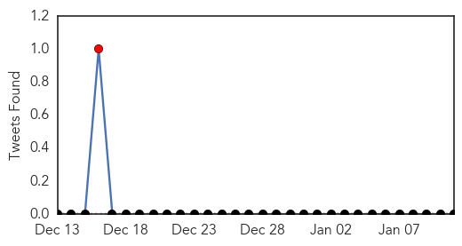

Measles
30-Day Web Trend
2 alerts, 0 warnings

30-Day Twitter Trend
0 alerts, 0 warnings

Article Locations
Article Confidences
Top Articles:
- 0.986
- While recent reports of possible measles in Wayne proved unfounded, disease remains a danger
- 0.972
- Disneyland measles outbreak: 19 fall ill after visiting theme parks
- 0.814
- Is the Anti-Vaccination Movement to Blame for Disneyland’s Measles Outbreak?
- 0.605
- Cases of Measles Linked to California Disney Parks
- 0.570
- 19 measles cases linked to Disneyland
- 0.511
- Safe breastfeeding key to improve children's health - World
- 0.509
- Disney Park Visitors Contract Measles
Top Tweets:
-
No tweets found for Jan 11, 2015
Mumps
30-Day Web Trend
1 alerts, 0 warnings

30-Day Twitter Trend
1 alerts, 0 warnings

Article Locations

Article Confidences

Top Articles:
-
No articles found for Jan 11, 2015
Top Tweets:
-
No tweets found for Jan 11, 2015